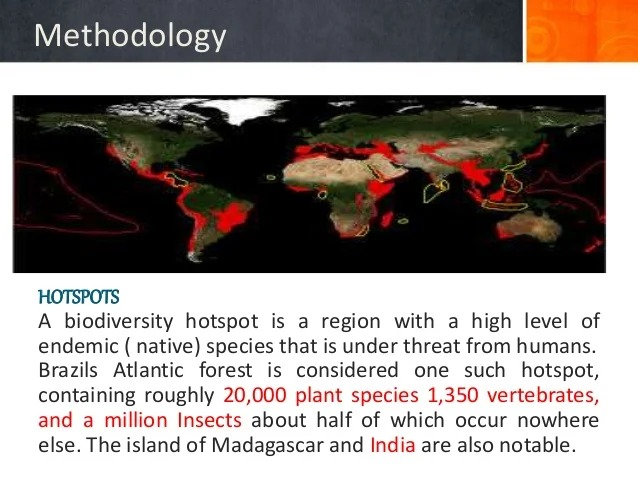
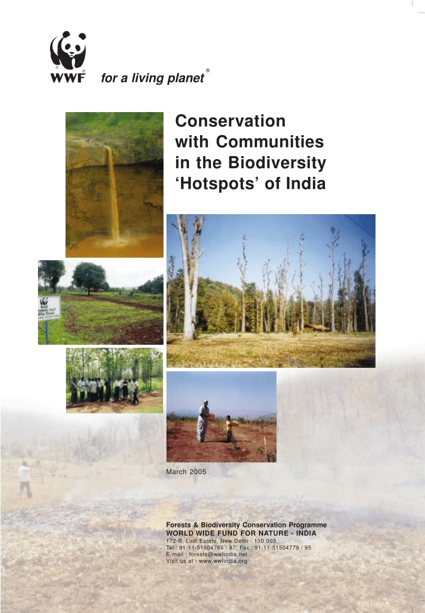
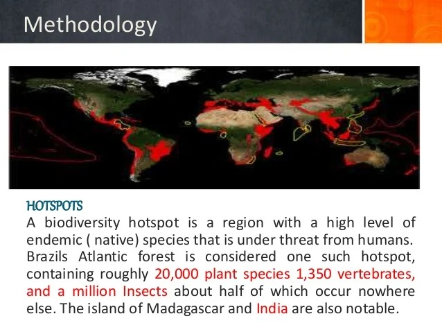
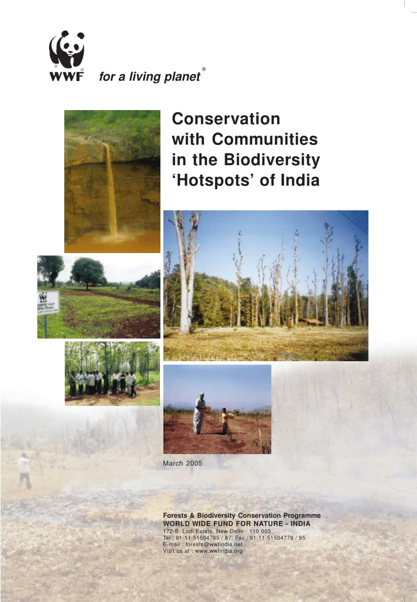

Navigating the Future: Environmental Compliance Assessment
Map
Introduction to Environmental Compliance Assessment
This section serves as the foundation, introducing visitors to the critical concept of
environmental compliance assessment. It underscores the importance of ensuring that industries
and businesses adhere to environmental laws and regulations. By providing a clear overview,
including images of industrial facilities or businesses, this section aims to capture the
audience's attention and convey the gravity of environmental compliance..
Methodology
Here, visitors gain insight into the methodology employed in environmental compliance assessment.
It outlines the systematic approach involving on-site inspections, meticulous documentation
review, and comprehensive environmental impact assessments. By elaborating on these processes
and incorporating images of inspectors in action and documents being scrutinized, this section
aims to illustrate the rigor and thoroughness of the assessment process..

Data Collection
Spatial Datasets:
1.Relevant spatial datasets collected from authoritative sources.
2.Sources include government
agencies, research institutions, and environmental organizations.
3.Utilized open-access
databases and remote sensing imagery for comprehensive coverage..
Data Preparation:
Standardization and Preprocessing:
Standardized and preprocessed collected datasets for compatibility with GIS software.
Cleaned data to remove errors, inconsistencies, and missing values.
Georeferenced spatial datasets to establish spatial coordinates.
Integration:
Integrated datasets into a comprehensive spatial database using GIS software.
Established spatial relationships between different layers of data for spatial analysis and
visualization.
Spatial Analysis:
GIS Software:
Utilized ArcGIS or QGIS software for spatial analysis.
Applied various spatial analysis techniques including overlay analysis, proximity analysis, and
spatial interpolation.
Mapping Areas at Risk:
Identified environmental hazards such as floods, earthquakes, and pollution sources.
Mapped areas at risk by integrating hazard susceptibility, exposure, and vulnerability data.
Identifying Biodiversity Hotspots:
Analyzed biodiversity data to identify areas of high biodiversity significance.
Mapped biodiversity hotspots to prioritize conservation efforts.
Assessing Impact of Development Projects:
Evaluated potential environmental impact of development projects.
Conducted spatial analysis to assess changes in land use and habitat fragmentation.
.jpg)
Areas of Non-compliance
In this section, visitors gain insight into the various areas where industries or businesses may
fall short of compliance with environmental regulations. It sheds light on common violations
such as illegal dumping, pollution discharge, or inadequate waste management. Through compelling
visuals illustrating these violations, this section aims to evoke awareness and urgency
regarding the environmental impact of non-compliance..

Stakeholder Engagement:
Stakeholder Identification:
Identified relevant stakeholders including policymakers, government agencies, and local
communities.
Engaged environmental NGOs and industry stakeholders.
Engagement Strategies:
Conducted stakeholder consultations, workshops, and public meetings.
Fostered collaboration and partnership to integrate diverse perspectives.
Decision Support and Policy Planning:
Decision Support Tools:
Developed decision support tools and models using GIS technology.
Generated thematic maps, reports, and visualizations to communicate findings.
Policy Planning:
Supported policy planning processes with evidence-based insights.
Provided alternative scenarios for sustainable development.
Monitoring and Evaluation:
Monitoring Systems:
Established monitoring systems to track environmental indicators.
Evaluated the impact of policy interventions and adjusted strategies accordingly.
Continuous Improvement:
Updated methodologies based on monitoring data and stakeholder feedback.
Corrective Actions
Here, visitors discover the proactive steps that businesses can take to address non-compliance
issues identified during the assessment. It emphasizes the importance of embracing sustainable
practices, implementing effective pollution control measures, and enhancing waste management
systems. By showcasing images of sustainable technologies or practices in action, this section
aims to inspire and empower businesses to take meaningful corrective actions.
About
Environmental Compliance Assessment evaluates the compliance of industries or businesses with
existing environmental laws and policies. The methodology includes on-site inspections,
review of documentation, and assessment of environmental impact assessments to ensure
adherence to regulations.
Contact
For inquiries or assistance, please contact us:
Email: info@environmentalcomplianceassessment.com
Phone: 123-456-7890
Map
Introduction to Environmental Compliance Assessment
This section serves as the foundation, introducing visitors to the critical concept of environmental compliance assessment. It underscores the importance of ensuring that industries and businesses adhere to environmental laws and regulations. By providing a clear overview, including images of industrial facilities or businesses, this section aims to capture the audience's attention and convey the gravity of environmental compliance..
Methodology
Here, visitors gain insight into the methodology employed in environmental compliance assessment. It outlines the systematic approach involving on-site inspections, meticulous documentation review, and comprehensive environmental impact assessments. By elaborating on these processes and incorporating images of inspectors in action and documents being scrutinized, this section aims to illustrate the rigor and thoroughness of the assessment process..
Data Collection
Spatial Datasets:
1.Relevant spatial datasets collected from authoritative sources.
2.Sources include government
agencies, research institutions, and environmental organizations.
3.Utilized open-access
databases and remote sensing imagery for comprehensive coverage..
Data Preparation:
Standardization and Preprocessing:
Standardized and preprocessed collected datasets for compatibility with GIS software.
Cleaned data to remove errors, inconsistencies, and missing values.
Georeferenced spatial datasets to establish spatial coordinates.
Integration:
Integrated datasets into a comprehensive spatial database using GIS software.
Established spatial relationships between different layers of data for spatial analysis and
visualization.
Spatial Analysis:
GIS Software:
Utilized ArcGIS or QGIS software for spatial analysis.
Applied various spatial analysis techniques including overlay analysis, proximity analysis, and spatial interpolation.
Mapping Areas at Risk:
Identified environmental hazards such as floods, earthquakes, and pollution sources.
Mapped areas at risk by integrating hazard susceptibility, exposure, and vulnerability data.
Identifying Biodiversity Hotspots:
Analyzed biodiversity data to identify areas of high biodiversity significance.
Mapped biodiversity hotspots to prioritize conservation efforts.
Assessing Impact of Development Projects:
Evaluated potential environmental impact of development projects.
Conducted spatial analysis to assess changes in land use and habitat fragmentation.
Areas of Non-compliance
In this section, visitors gain insight into the various areas where industries or businesses may fall short of compliance with environmental regulations. It sheds light on common violations such as illegal dumping, pollution discharge, or inadequate waste management. Through compelling visuals illustrating these violations, this section aims to evoke awareness and urgency regarding the environmental impact of non-compliance..
Stakeholder Engagement:
Stakeholder Identification:
Identified relevant stakeholders including policymakers, government agencies, and local communities.
Engaged environmental NGOs and industry stakeholders.
Engagement Strategies:
Conducted stakeholder consultations, workshops, and public meetings.
Fostered collaboration and partnership to integrate diverse perspectives.
Decision Support and Policy Planning:
Decision Support Tools:
Developed decision support tools and models using GIS technology.
Generated thematic maps, reports, and visualizations to communicate findings.
Policy Planning:
Supported policy planning processes with evidence-based insights.
Provided alternative scenarios for sustainable development.
Monitoring and Evaluation:
Monitoring Systems:
Established monitoring systems to track environmental indicators.
Evaluated the impact of policy interventions and adjusted strategies accordingly.
Continuous Improvement:
Updated methodologies based on monitoring data and stakeholder feedback.
Corrective Actions
Here, visitors discover the proactive steps that businesses can take to address non-compliance issues identified during the assessment. It emphasizes the importance of embracing sustainable practices, implementing effective pollution control measures, and enhancing waste management systems. By showcasing images of sustainable technologies or practices in action, this section aims to inspire and empower businesses to take meaningful corrective actions.
About
Environmental Compliance Assessment evaluates the compliance of industries or businesses with existing environmental laws and policies. The methodology includes on-site inspections, review of documentation, and assessment of environmental impact assessments to ensure adherence to regulations.
Contact
For inquiries or assistance, please contact us:
Email: info@environmentalcomplianceassessment.com
Phone: 123-456-7890